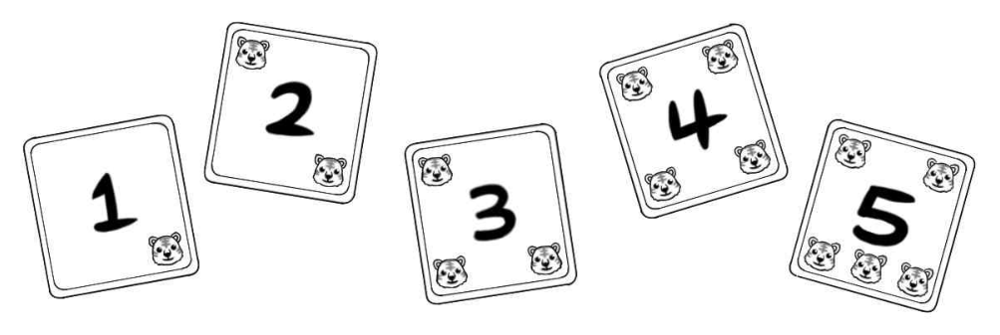
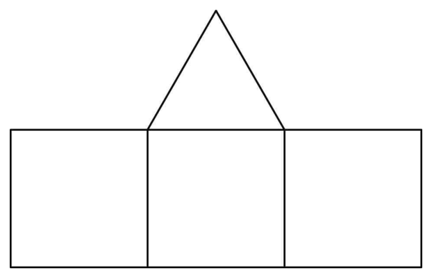
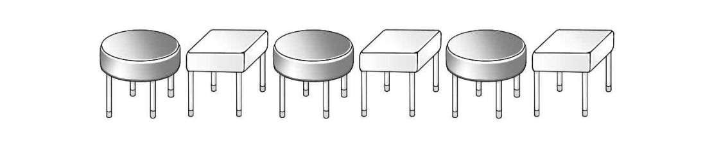
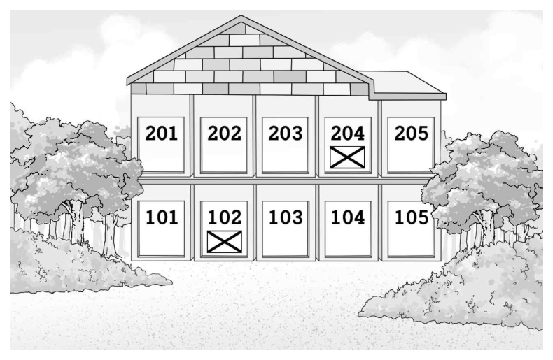

1. 2019년 3월 가형 8번 · 3점 · 고1 범위 · 순열과 조합 · G2H-05b#9
원본 (내부용)$9$개의 숫자 $0$, $0$, $0$, $1$, $1$, $1$, $1$, $1$, $1$을 $0$끼리는 어느 것도 이웃하지 않도록 일렬로 나열하여 만들 수 있는 아홉 자리의 자연수의 개수는? [3점]
① $12$② $14$③ $16$④ $18$⑤ $20$
원본 정답 ⑤
원본 풀이 (내부용)[출제의도] 조합을 이용하여 조건에 맞는 자연수의 개수를 구한다.
자연수의 첫 자리수는 0이 될 수 없으므로 1이다.
\(
1,\ \square,\ 1,\ \square,\ 1,\ \square,\ 1,\ \square,\ 1,\ \square
\)
나머지 5개의 1의 좌우에 6개의 빈자리가 있다. 이 중 3개의 0을 넣으면 0끼리는 어느 것도 이웃하지 않는 아홉 자리의 자연수를 만들 수 있다. 따라서 구하는 자연수의 개수는
\(
{}_6C_3=\frac{6\times5\times4}{3\times2\times1}=20
\)
생성기 숫자판 1/6 · G2H-05b#9$5$개의 숫자 $0$, $1$, $1$, $1$, $1$을 $0$끼리는 어느 것도 이웃하지 않도록 일렬로 나열하여 만들 수 있는 $5$자리의 자연수의 개수로 옳은 것을 고르세요.
① $2$② $3$③ $4$④ $5$⑤ $6$
정답③ $4$ $1$ $4$개를 먼저 나열하면 그 사이와 양 끝에 $5$개의 자리가 생깁니다. 맨 앞자리에는 $0$이 올 수 없으므로 나머지 $4$개의 자리 중 $1$개를 택하여 $0$을 하나 넣습니다. ${}_{4}\mathrm{C}_{1}=4$
3. 2019년 3월 나형 6번 · 3점 · 고1 범위 · 순열과 조합 · G2H-05#8
원본 (내부용)서로 다른 $6$개의 과목 중에서 서로 다른 $3$개를 선택하는 경우의 수는? [3점]
① $12$② $14$③ $16$④ $18$⑤ $20$
원본 정답 ⑤
원본 풀이 (내부용)[출제의도] 조합의 뜻을 이해한다.
서로 다른 6개의 과목 중에서 서로 다른 3개를 선택하는 경우의 수는 서로 다른 6개 중에서 3개를 선택하는 조합의 수 \({}_6C_3\)과 같으므로
\(
{}_6C_3=\frac{{}_6P_3}{3!}
=\frac{6\times5\times4}{3\times2\times1}=20
\)
생성기 숫자판 1/6 · G2H-05#8서로 다른 $4$개의 과목 중에서 서로 다른 $2$개를 선택하는 경우의 수로 옳은 것을 고르세요.
① $2$② $3$③ $4$④ $6$⑤ $8$
정답④ $6$ 서로 다른 $4$개에서 $2$개를 택하는 경우의 수는 ${}_{4}\mathrm{C}_{2}=6$
숫자: 원본 6 3 → 쌍둥이 4 2
생성기 숫자판 2/6 · G2H-05#8서로 다른 $5$개의 과목 중에서 서로 다른 $3$개를 선택하는 경우의 수로 옳은 것을 고르세요.
① $10$② $12$③ $14$④ $15$⑤ $20$
정답① $10$ 서로 다른 $5$개에서 $3$개를 택하는 경우의 수는 ${}_{5}\mathrm{C}_{3}=10$
숫자: 원본 6 3 → 쌍둥이 5 3 · 같은 수: 3
생성기 숫자판 3/6 · G2H-05#8서로 다른 $7$개의 과목 중에서 서로 다른 $2$개를 선택하는 경우의 수로 옳은 것을 고르세요.
① $10$② $19$③ $21$④ $23$⑤ $42$
정답③ $21$ 서로 다른 $7$개에서 $2$개를 택하는 경우의 수는 ${}_{7}\mathrm{C}_{2}=21$
숫자: 원본 6 3 → 쌍둥이 7 2
생성기 숫자판 4/6 · G2H-05#8서로 다른 $5$개의 과목 중에서 서로 다른 $2$개를 선택하는 경우의 수로 옳은 것을 고르세요.
① $5$② $8$③ $10$④ $12$⑤ $20$
정답③ $10$ 서로 다른 $5$개에서 $2$개를 택하는 경우의 수는 ${}_{5}\mathrm{C}_{2}=10$
숫자: 원본 6 3 → 쌍둥이 5 2
생성기 숫자판 5/6 · G2H-05#8서로 다른 $7$개의 과목 중에서 서로 다른 $3$개를 선택하는 경우의 수로 옳은 것을 고르세요.
① $17$② $33$③ $35$④ $37$⑤ $70$
정답③ $35$ 서로 다른 $7$개에서 $3$개를 택하는 경우의 수는 ${}_{7}\mathrm{C}_{3}=35$
숫자: 원본 6 3 → 쌍둥이 7 3 · 같은 수: 3
생성기 숫자판 6/6 · G2H-05#8서로 다른 $4$개의 과목 중에서 서로 다른 $3$개를 선택하는 경우의 수로 옳은 것을 고르세요.
① $4$② $6$③ $8$④ $9$⑤ $14$
정답① $4$ 서로 다른 $4$개에서 $3$개를 택하는 경우의 수는 ${}_{4}\mathrm{C}_{3}=4$
숫자: 원본 6 3 → 쌍둥이 4 3 · 같은 수: 3
4. 2019년 3월 나형 19번 · 4점 · 고1 범위 · 순열과 조합 · 4점 쌍둥이
원본 (내부용)두 집합 $A= \{ x | . .$$x$는 $10$ 이하의 자연수$\}$, $B= \{ x | . .$$x$는 $6$ 이상 $15$ 이하의 자연수$\}$ 가 있다. 다음은 $XSUBSET A$, $n ( X \cup B )$$=12$ 를 만족시키는 집합 $X$의 개수를 구하는 과정이다. $XSUBSET A$이므로 세 집합 $A$, $B$, $X$를 벤다이어그램으로 나타내면 다음과 같다. $X_{1} =X{\cap } ( A-B )$, $X_{2} =X \cap ( A{\cap }B )$라 하면 $X=X_{1} {\cup }X_{2}$이고 $X_{1} {\cap }X_{2} =\varnothing$이다. (ⅰ) $n ( X \cup B )$$=12$이고 $n ( B )$$=10$이므로 $n ( X_{1} )$$= {\boxed{ (가) }}$ 따라서 가능한 집합 $X_{1}$의 개수는 ${\boxed{ (나) }}$이다. (ⅱ) 집합 $X_{2}$는 집합 $A \cap B$의 부분집합이므로 가능한 집합 $X_{2}$의 개수는 ${\boxed{ (다) }}$이다. (ⅰ), (ⅱ)에 의하여 집합 $X$의 개수는 ${\boxed{ (나) }}$$\times$${\boxed{ (다) }}$ 이다. 위의 (가), (나), (다)에 알맞은 수를 각각 $p$, $q$, $r$라 할 때, $p+q+r$의 값은? [4점]
① $44$② $47$③ $50$④ $53$⑤ $56$
원본 정답 ①
원본 풀이 (내부용)[출제의도] 집합의 수를 이해하여 집합의 개수를 구하는 과정을 추론한다.
\(
A=\{x\mid x\text{는 10 이하의 자연수}\}
\)
\(
=\{1,2,3,4,5,6,7,8,9,10\}
\)
\(
B=\{x\mid x\text{는 6 이상 15 이하의 자연수}\}
\)
\(
=\{6,7,8,9,10,11,12,13,14,15\}
\)
에서
\(
A-B=\{1,2,3,4,5\},\quad A\cap B=\{6,7,8,9,10\}
\)
이므로
\(
n(A-B)=5,\quad n(A\cap B)=5
\)
\(X_1=X\cap(A-B),\ X_2=X\cap(A\cap B)\)라 하면
\(
X=X_1\cup X_2\text{이고 }X_1\cap X_2=\varnothing
\)
\(
\text{(i)}\quad n(X\cup B)=12\text{이고 }n(B)=10\text{이므로}
\)
\(
n(X_1)=2
\)
집합 \(X_1\)은 집합 \(A-B\)의 부분집합 중 원소의 개수가 2인 부분집합이므로 가능한 집합 \(X_1\)의 개수는
\(
{}_5C_2=10
\)
\(
\text{(ii)}\quad X_2\text{는 집합 }A\cap B\text{의 부분집합이므로 가능한 집합 }X_2\text{의 개수는 }2^5=32
\)
(i), (ii)에 의하여 집합 \(X\)의 개수는 집합 \(X_1\)을 정하는 경우의 수와 집합 \(X_2\)를 정하는 경우의 수의 곱과 같으므로
\(
{}_5C_2\times2^5=10\times32=320
\)
따라서 \(p=2,\ q=10,\ r=32\)이므로
\(
p+q+r=44
\)
쌍둥이 1/5 · 4점 쌍둥이집합 $A=\{1,2,\ldots,13\}$, $B=\{7,8,\ldots,17\}$에 대하여 $X\subset A$, $n(X\cup B)=14$를 만족하는 집합 $X$의 개수를 구하는 과정입니다. $X_1=X\cap(A-B)$, $X_2=X\cap(A\cap B)$로 두면 가능한 $X$의 개수는 $\binom{n(A-B)}{n(X\cup B)-n(B)}\cdot2^{n(A\cap B)}$입니다. 이때 세 빈칸의 값 $p=n(X\cup B)-n(B)$, $q=\binom{n(A-B)}p$, $r=2^{n(A\cap B)}$에 대하여 $p+q+r$을 구하세요.
① $147$② $149$③ $151$④ $153$⑤ $155$
정답③ $151$ $A-B=\{1,\ldots,6\}$이므로 원소 수는 6이고, $A\cap B=\{7,\ldots,13\}$이므로 원소 수는 7입니다. 또한 $n(B)=11$입니다. $p=14-11=3$, $q=\binom63=20$, $r=2^7=128$입니다. 따라서 $p+q+r=3+20+128=151$입니다.
쌍둥이 2/5 · 4점 쌍둥이두 집합 $A=\{x\,|\,x\text{는 }12\text{ 이하의 자연수}\}$, $B=\{x\,|\,x\text{는 }8\text{ 이상 }16\text{ 이하의 자연수}\}$가 있습니다. 다음은 $X\subset A$, $n(X\cup B)=12$를 만족시키는 집합 $X$의 개수를 구하는 과정입니다. $X_{1}=X\cap(A-B)$, $X_{2}=X\cap(A\cap B)$라 하면 $X=X_{1}\cup X_{2}$이고 $X_{1}\cap X_{2}=\varnothing$입니다. (ⅰ) $n(X\cup B)=12$이고 $n(B)=9$이므로 $n(X_{1})=\boxed{\text{(가)}}$입니다. 따라서 가능한 집합 $X_{1}$의 개수는 $\boxed{\text{(나)}}$입니다. (ⅱ) 집합 $X_{2}$는 집합 $A\cap B$의 부분집합이므로 가능한 집합 $X_{2}$의 개수는 $\boxed{\text{(다)}}$입니다. (ⅰ), (ⅱ)에 의하여 집합 $X$의 개수는 $\boxed{\text{(나)}}\times\boxed{\text{(다)}}$입니다. 위의 (가), (나), (다)에 알맞은 수를 각각 $p$, $q$, $r$라 할 때, $p+q+r$의 값으로 옳은 것을 고르세요.
① $58$② $61$③ $64$④ $67$⑤ $70$
정답⑤ $70$ $X\cup B=X_{1}\cup B$이고 $X_{1}$과 $B$는 서로소이므로 $n(X_{1})=12-9=3$, 즉 $p=3$ $A-B=\{1,\ 2,\ 3,\ 4,\ 5,\ 6,\ 7\}$의 원소 $7$개 중 $3$개를 고르는 경우이므로 $q={}_{7}\mathrm{C}_{3}=35$ $A\cap B=\{8,\ \cdots,\ 12\}$의 원소는 $5$개이므로 $r=2^{5}=32$ $p+q+r=3+35+32=70$
쌍둥이 3/5 · 4점 쌍둥이두 집합 $A=\{x\,|\,x\text{는 }9\text{ 이하의 자연수}\}$, $B=\{x\,|\,x\text{는 }5\text{ 이상 }14\text{ 이하의 자연수}\}$가 있습니다. 다음은 $X\subset A$, $n(X\cup B)=13$을 만족시키는 집합 $X$의 개수를 구하는 과정입니다. $X_{1}=X\cap(A-B)$, $X_{2}=X\cap(A\cap B)$라 하면 $X=X_{1}\cup X_{2}$이고 $X_{1}\cap X_{2}=\varnothing$입니다. (ⅰ) $n(X\cup B)=13$이고 $n(B)=10$이므로 $n(X_{1})=\boxed{\text{(가)}}$입니다. 따라서 가능한 집합 $X_{1}$의 개수는 $\boxed{\text{(나)}}$입니다. (ⅱ) 집합 $X_{2}$는 집합 $A\cap B$의 부분집합이므로 가능한 집합 $X_{2}$의 개수는 $\boxed{\text{(다)}}$입니다. (ⅰ), (ⅱ)에 의하여 집합 $X$의 개수는 $\boxed{\text{(나)}}\times\boxed{\text{(다)}}$입니다. 위의 (가), (나), (다)에 알맞은 수를 각각 $p$, $q$, $r$라 할 때, $p+q+r$의 값으로 옳은 것을 고르세요.
① $39$② $42$③ $45$④ $48$⑤ $51$
정답① $39$ $X\cup B=X_{1}\cup B$이고 $X_{1}$과 $B$는 서로소이므로 $n(X_{1})=13-10=3$, 즉 $p=3$ $A-B=\{1,\ 2,\ 3,\ 4\}$의 원소 $4$개 중 $3$개를 고르는 경우이므로 $q={}_{4}\mathrm{C}_{3}=4$ $A\cap B=\{5,\ \cdots,\ 9\}$의 원소는 $5$개이므로 $r=2^{5}=32$ $p+q+r=3+4+32=39$
쌍둥이 4/5 · 4점 쌍둥이두 집합 $A=\{x\,|\,x\text{는 }12\text{ 이하의 자연수}\}$, $B=\{x\,|\,x\text{는 }9\text{ 이상 }15\text{ 이하의 자연수}\}$가 있습니다. 다음은 $X\subset A$, $n(X\cup B)=10$을 만족시키는 집합 $X$의 개수를 구하는 과정입니다. $X_{1}=X\cap(A-B)$, $X_{2}=X\cap(A\cap B)$라 하면 $X=X_{1}\cup X_{2}$이고 $X_{1}\cap X_{2}=\varnothing$입니다. (ⅰ) $n(X\cup B)=10$이고 $n(B)=7$이므로 $n(X_{1})=\boxed{\text{(가)}}$입니다. 따라서 가능한 집합 $X_{1}$의 개수는 $\boxed{\text{(나)}}$입니다. (ⅱ) 집합 $X_{2}$는 집합 $A\cap B$의 부분집합이므로 가능한 집합 $X_{2}$의 개수는 $\boxed{\text{(다)}}$입니다. (ⅰ), (ⅱ)에 의하여 집합 $X$의 개수는 $\boxed{\text{(나)}}\times\boxed{\text{(다)}}$입니다. 위의 (가), (나), (다)에 알맞은 수를 각각 $p$, $q$, $r$라 할 때, $p+q+r$의 값으로 옳은 것을 고르세요.
① $72$② $75$③ $78$④ $81$⑤ $84$
정답② $75$ $X\cup B=X_{1}\cup B$이고 $X_{1}$과 $B$는 서로소이므로 $n(X_{1})=10-7=3$, 즉 $p=3$ $A-B=\{1,\ 2,\ 3,\ 4,\ 5,\ 6,\ 7,\ 8\}$의 원소 $8$개 중 $3$개를 고르는 경우이므로 $q={}_{8}\mathrm{C}_{3}=56$ $A\cap B=\{9,\ \cdots,\ 12\}$의 원소는 $4$개이므로 $r=2^{4}=16$ $p+q+r=3+56+16=75$
쌍둥이 5/5 · 4점 쌍둥이집합 $A=\{1,2,\ldots,14\}$, $B=\{10,11,\ldots,18\}$에 대하여 $X\subset A$, $n(X\cup B)=12$를 만족하는 집합 $X$의 개수를 구하는 과정입니다. $X_1=X\cap(A-B)$, $X_2=X\cap(A\cap B)$로 두면 가능한 $X$의 개수는 $\binom{n(A-B)}{n(X\cup B)-n(B)}\cdot2^{n(A\cap B)}$입니다. 이때 세 빈칸의 값 $p=n(X\cup B)-n(B)$, $q=\binom{n(A-B)}p$, $r=2^{n(A\cap B)}$에 대하여 $p+q+r$을 구하세요.
① $115$② $117$③ $119$④ $121$⑤ $123$
정답③ $119$ $A-B=\{1,\ldots,9\}$이므로 원소 수는 9이고, $A\cap B=\{10,\ldots,14\}$이므로 원소 수는 5입니다. 또한 $n(B)=9$입니다. $p=12-9=3$, $q=\binom93=84$, $r=2^5=32$입니다. 따라서 $p+q+r=3+84+32=119$입니다.
생성기 숫자판 6/6 · G2H-05#5${}_{5}\mathrm{P}_{2}$의 값을 구하세요.
정답$20$ ${}_{5}\mathrm{P}_{2}=5\times 4=20$
숫자: 원본 4 2 → 쌍둥이 5 2 · 같은 수: 2
6. 2020년 3월 15번 · 4점 · 고1 범위 · 순열과 조합 · 4점 쌍둥이
원본 (내부용)삼각형 $\mathrm{ABC}$에서, 꼭짓점 $\mathrm{A}$와 선분 $\mathrm{BC}$ 위의 네 점을 연결하는 $4$개의 선분을 그리고, 선분 $\mathrm{AB}$ 위의 세 점과 선분 $\mathrm{AC}$ 위의 세 점을 연결하는 $3$개의 선분을 그려 그림과 같은 도형을 만들었다. 이 도형의 선들로 만들 수 있는 삼각형의 개수는? [4점]
① $30$② $40$③ $50$④ $60$⑤ $70$
원본 정답 ④
원본 풀이 (내부용)[출제의도] 조합을 이용하여 삼각형의 개수를 구하는 문제를 해결한다.
그림에서 두 직선 \(AD, AF\)와 직선 \(l_3\)를 선택하면 색칠된 부분과 같은 삼각형이 만들어진다. 이와 같이 6개의 직선 \(AB, AD, AE, AF, AG, AC\) 중 서로 다른 2개의 직선을 택하고, 4개의 직선 \(l_1,l_2,l_3,BC\) 중 1개의 직선을 택하면 삼각형이 1개 만들어진다.
따라서 도형의 선들로 만들 수 있는 삼각형의 개수는
\(
{}_6C_2\times{}_4C_1=15\times4=60
\)
그림: 꼭짓점 \(A\)에서 밑변 \(BC\)의 점 \(B,D,E,F,G,C\)로 선분이 그어져 있다. \(BC\)와 평행한 세 직선 \(l_1,l_2,l_3\)가 표시되어 있고, \(AD,AF,l_3\)로 만들어지는 삼각형의 일부가 색칠되어 있다.
쌍둥이 1/5 · 4점 쌍둥이삼각형 $ABC$에서 꼭짓점 $A$와 선분 $BC$ 위의 $4$개 점을 연결하는 선분을 그리고, 선분 $AB$ 위의 $2$개 점과 선분 $AC$ 위의 $2$개 점을 서로 연결하여 그림과 같은 도형을 만들었다. 이 선들로 만들 수 있으면서 꼭짓점 $A$를 포함하지 않는 삼각형의 개수로 옳은 것을 고르시오. [4점]
① $15$② $20$③ $30$④ $40$⑤ $45$
정답③ $30$ 그려진 선분 집합은 삼각형의 세 변, $A$에서 $BC$로 가는 $4$개 선분, 그리고 마주 보는 변 위의 $2$쌍을 잇는 선분이다. 각 선분 쌍의 교점을 유리수 좌표로 계산한다. 세 선분을 하나씩 고르는 모든 조합을 검사해 서로 다른 세 교점이 생기고 각 교점이 해당 유한 선분 안에 있는 경우만 삼각형으로 센다. 전체는 45개이다. $A$를 꼭짓점으로 하는 삼각형은 $A$를 지나는 $n+2$개 선분 중 두 개를 고르는 경우라 $\binom{6}2=15$개이다. 따라서 $A$를 포함하지 않는 것은 $45-15=30$개이다.
숫자: 원본 4 3 → 쌍둥이 4 2 2 · 같은 수: 4
쌍둥이 2/5 · 4점 쌍둥이삼각형 $ABC$에서, 꼭짓점 $A$와 선분 $BC$ 위의 $3$개의 점을 연결하는 $3$개의 선분을 그리고, 선분 $AB$ 위의 $4$개의 점과 선분 $AC$ 위의 $4$개의 점을 연결하는 $4$개의 선분을 그려 그림과 같은 도형을 만들었습니다. 이 도형의 선들로 만들 수 있는 삼각형의 개수로 옳은 것을 고르세요.
① $20$② $30$③ $40$④ $50$⑤ $60$
정답④ $50$ 삼각형의 한 꼭짓점은 $A$이고, $A$를 지나는 선 $5$개(선분 $AB$, $AC$ 포함) 중 $2$개를 고르는 경우의 수는 ${}_{5}\mathrm{C}_{2}=10$ 나머지 한 변은 선분 $BC$와 새로 그린 $4$개의 선분 중 하나이므로 $5$가지 따라서 삼각형의 개수는 $10\times 5=50$
숫자: 원본 4 3 → 쌍둥이 3 3 4 4 4 · 같은 수: 3 4
쌍둥이 3/5 · 4점 쌍둥이삼각형 $ABC$에서, 꼭짓점 $A$와 선분 $BC$ 위의 $5$개의 점을 연결하는 $5$개의 선분을 그리고, 선분 $AB$ 위의 $2$개의 점과 선분 $AC$ 위의 $2$개의 점을 연결하는 $2$개의 선분을 그려 그림과 같은 도형을 만들었습니다. 이 도형의 선들로 만들 수 있는 삼각형의 개수로 옳은 것을 고르세요.
① $23$② $33$③ $43$④ $53$⑤ $63$
정답⑤ $63$ 삼각형의 한 꼭짓점은 $A$이고, $A$를 지나는 선 $7$개(선분 $AB$, $AC$ 포함) 중 $2$개를 고르는 경우의 수는 ${}_{7}\mathrm{C}_{2}=21$ 나머지 한 변은 선분 $BC$와 새로 그린 $2$개의 선분 중 하나이므로 $3$가지 따라서 삼각형의 개수는 $21\times 3=63$
숫자: 원본 4 3 → 쌍둥이 5 5 2 2 2
쌍둥이 4/5 · 4점 쌍둥이삼각형 $ABC$에서, 꼭짓점 $A$와 선분 $BC$ 위의 $2$개의 점을 연결하는 $2$개의 선분을 그리고, 선분 $AB$ 위의 $3$개의 점과 선분 $AC$ 위의 $3$개의 점을 연결하는 $3$개의 선분을 그려 그림과 같은 도형을 만들었습니다. 이 도형의 선들로 만들 수 있는 삼각형의 개수로 옳은 것을 고르세요.
① $4$② $14$③ $24$④ $34$⑤ $44$
정답③ $24$ 삼각형의 한 꼭짓점은 $A$이고, $A$를 지나는 선 $4$개(선분 $AB$, $AC$ 포함) 중 $2$개를 고르는 경우의 수는 ${}_{4}\mathrm{C}_{2}=6$ 나머지 한 변은 선분 $BC$와 새로 그린 $3$개의 선분 중 하나이므로 $4$가지 따라서 삼각형의 개수는 $6\times 4=24$
숫자: 원본 4 3 → 쌍둥이 2 2 3 3 3 · 같은 수: 3
쌍둥이 5/5 · 4점 쌍둥이삼각형 $ABC$에서 꼭짓점 $A$와 선분 $BC$ 위의 $4$개 점을 연결하는 선분을 그리고, 선분 $AB$ 위의 $3$개 점과 선분 $AC$ 위의 $3$개 점을 서로 연결하여 그림과 같은 도형을 만들었다. 이 선들로 만들 수 있으면서 꼭짓점 $A$를 포함하지 않는 삼각형의 개수로 옳은 것을 고르시오. [4점]
① $30$② $35$③ $45$④ $55$⑤ $60$
정답③ $45$ 그려진 선분 집합은 삼각형의 세 변, $A$에서 $BC$로 가는 $4$개 선분, 그리고 마주 보는 변 위의 $3$쌍을 잇는 선분이다. 각 선분 쌍의 교점을 유리수 좌표로 계산한다. 세 선분을 하나씩 고르는 모든 조합을 검사해 서로 다른 세 교점이 생기고 각 교점이 해당 유한 선분 안에 있는 경우만 삼각형으로 센다. 전체는 60개이다. $A$를 꼭짓점으로 하는 삼각형은 $A$를 지나는 $n+2$개 선분 중 두 개를 고르는 경우라 $\binom{6}2=15$개이다. 따라서 $A$를 포함하지 않는 것은 $60-15=45$개이다.
숫자: 원본 4 3 → 쌍둥이 4 3 3 · 같은 수: 3 4
7. 2020년 3월 22번 · 3점 · 고1 범위 · 순열과 조합 · G2H-05#5
원본 (내부용)$_{3} {\mathrm{P}}_{2}$의 값을 구하시오. [3점]
원본 정답 6
원본 풀이 (내부용)[출제의도] 순열의 수를 계산한다.
\(
{}_3P_2=3\times2=6
\)
생성기 숫자판 1/6 · G2H-05#5${}_{8}\mathrm{P}_{2}$의 값을 구하세요.
정답$56$ ${}_{8}\mathrm{P}_{2}=8\times 7=56$
숫자: 원본 3 2 → 쌍둥이 8 2 · 같은 수: 2
생성기 숫자판 2/6 · G2H-05#5${}_{5}\mathrm{P}_{2}$의 값을 구하세요.
정답$20$ ${}_{5}\mathrm{P}_{2}=5\times 4=20$
숫자: 원본 3 2 → 쌍둥이 5 2 · 같은 수: 2
생성기 숫자판 3/6 · G2H-05#5${}_{7}\mathrm{P}_{3}$의 값을 구하세요.
10. 2022년 3월 7번 · 3점 · 고1 범위 · 순열과 조합 · G2M10-02#0
원본 (내부용)숫자 1, 2, 3, 4, 5가 하나씩 적혀 있는 5장의 카드가 있다. 이 5장의 카드를 모두 일렬로 나열할 때, 짝수가 적혀 있는 카드끼리 서로 이웃하지 않도록 나열하는 경우의 수는? [3점]

① 24② 36③ 48④ 60⑤ 72
원본 정답 ⑤
원본 풀이 (내부용)[출제의도] 순열을 이해하여 일렬로 나열하는 경우의 수를 구한다.
먼저 1, 3, 5가 적혀 있는 카드를 나열하는 경우의 수는 \(3!=6\)이다.
이 각각에 대하여 1, 3, 5가 적혀 있는 세 장의 카드의 사이사이와 양끝의 네 곳 중에서 두 곳을 선택하여 2, 4가 적혀 있는 카드를 하나씩 나열하는 경우의 수는
\(
{}_4P_2=4\times3=12
\)
따라서 구하는 경우의 수는
\(
6\times12=72
\)
**[다른 풀이]**
5장의 카드를 모두 일렬로 나열하는 경우의 수는 \(5!=120\).
2, 4가 적혀 있는 두 장의 카드를 한 묶음으로 생각하여 이 묶음과 1, 3, 5가 적혀 있는 카드를 일렬로 나열하는 경우의 수는 \(4!\)이고, 각각에 대하여 2, 4가 적혀 있는 카드를 나열하는 경우의 수는 \(2!\)이므로 짝수가 적혀 있는 카드끼리 서로 이웃하도록 나열하는 경우의 수는
\(
4!\times2!=48
\)
따라서 짝수가 적혀 있는 카드끼리 서로 이웃하지 않도록 나열하는 경우의 수는
\(
120-48=72
\)
생성기 숫자판 1/5 · G2M10-02#0숫자 $1$, $2$, $3$, $4$가 하나씩 적혀 있는 $4$장의 카드가 있습니다. 이 $4$장의 카드를 모두 일렬로 나열할 때, 짝수가 적혀 있는 카드끼리 서로 이웃하지 않도록 나열하는 경우의 수로 옳은 것을 고르세요.
① $12$② $24$③ $36$④ $48$⑤ $60$
정답① $12$ 홀수가 적힌 카드 $2$장을 일렬로 나열하는 경우의 수는 $2!=2$ 홀수 카드 사이사이와 양 끝의 $3$개의 자리 중 $2$개를 골라 짝수 카드 $2$장을 나열하는 경우의 수는 ${}_{3}\mathrm{P}_{2}=6$ 따라서 구하는 경우의 수는 $2\times 6=12$
생성기 숫자판 2/5 · G2M10-02#0숫자 $1$, $2$, $4$, $5$, $7$, $8$이 하나씩 적혀 있는 $6$장의 카드가 있습니다. 이 $6$장의 카드를 모두 일렬로 나열할 때, 짝수가 적혀 있는 카드끼리 서로 이웃하지 않도록 나열하는 경우의 수로 옳은 것을 고르세요.
① $120$② $132$③ $144$④ $156$⑤ $168$
정답③ $144$ 홀수 카드 $3$장을 나열하는 경우의 수는 $3!=6$ 홀수 카드 사이와 양 끝의 $4$자리 중 $3$자리에 짝수 카드 $3$장을 나열하는 경우의 수는 ${}_{4}P_{3}=24$ 따라서 $6\times24=144$
생성기 숫자판 3/5 · G2M10-02#0숫자 $2$, $3$, $4$, $5$, $6$, $7$이 하나씩 적혀 있는 $6$장의 카드가 있습니다. 이 $6$장의 카드를 모두 일렬로 나열할 때, 짝수가 적혀 있는 카드끼리 서로 이웃하지 않도록 나열하는 경우의 수로 옳은 것을 고르세요.
① $96$② $108$③ $120$④ $132$⑤ $144$
정답⑤ $144$ 홀수가 적힌 카드 $3$장을 일렬로 나열하는 경우의 수는 $3!=6$ 홀수 카드 사이사이와 양 끝의 $4$개의 자리 중 $3$개를 골라 짝수 카드 $3$장을 나열하는 경우의 수는 ${}_{4}\mathrm{P}_{3}=24$ 따라서 구하는 경우의 수는 $6\times 24=144$
생성기 숫자판 4/5 · G2M10-02#0숫자 $3$, $4$, $5$, $6$, $7$이 하나씩 적혀 있는 $5$장의 카드가 있습니다. 이 $5$장의 카드를 모두 일렬로 나열할 때, 짝수가 적혀 있는 카드끼리 서로 이웃하지 않도록 나열하는 경우의 수로 옳은 것을 고르세요.
① $48$② $60$③ $72$④ $84$⑤ $96$
정답③ $72$ 홀수가 적힌 카드 $3$장을 일렬로 나열하는 경우의 수는 $3!=6$ 홀수 카드 사이사이와 양 끝의 $4$개의 자리 중 $2$개를 골라 짝수 카드 $2$장을 나열하는 경우의 수는 ${}_{4}\mathrm{P}_{2}=12$ 따라서 구하는 경우의 수는 $6\times 12=72$
생성기 숫자판 5/5 · G2M10-02#0숫자 $3$, $4$, $5$, $6$, $7$, $8$이 하나씩 적혀 있는 $6$장의 카드가 있습니다. 이 $6$장의 카드를 모두 일렬로 나열할 때, 짝수가 적혀 있는 카드끼리 서로 이웃하지 않도록 나열하는 경우의 수로 옳은 것을 고르세요.
① $144$② $156$③ $168$④ $180$⑤ $192$
정답① $144$ 홀수가 적힌 카드 $3$장을 일렬로 나열하는 경우의 수는 $3!=6$ 홀수 카드 사이사이와 양 끝의 $4$개의 자리 중 $3$개를 골라 짝수 카드 $3$장을 나열하는 경우의 수는 ${}_{4}\mathrm{P}_{3}=24$ 따라서 구하는 경우의 수는 $6\times 24=144$
원본 (내부용)그림과 같이 한 개의 정삼각형과 세 개의 정사각형으로 이루어진 도형이 있다. 숫자 \(1, 2, 3, 4, 5, 6\) 중에서 중복을 허락하여 네 개를 택해 네 개의 정사각형 내부에 하나씩 적을 때, 다음 조건을 만족시키는 경우의 수를 구하시오. [4점] \( \begin{aligned} \text{(가)}\quad &\text{세 개의 정사각형에 적혀 있는 수는 모두 정삼각형에 적혀 있는 수보다 작다.}\\ \text{(나)}\quad &\text{변을 공유하는 두 정사각형에 적혀 있는 수는 서로 다르다.} \end{aligned} \) 세 정사각형이 가로로 나란히 놓여 있고, 가운데 정사각형의 위쪽 변을 밑변으로 하는 정삼각형이 붙어 있다. 숫자는 각 정사각형 내부와 정삼각형 내부에 하나씩 적는다. ---

원본 정답 130
원본 풀이 (내부용)[출제의도] 순열과 조합을 이용하여 조건을 만족시키는 경우의 수를 구하는 문제를 해결한다.
그림과 같이 정삼각형에 적힌 수를 \(a\), 정사각형에 적힌 수를 왼쪽부터 차례로 \(b,c,d\)라 하자.
조건 (가)에서 \(a>b,\ a>c,\ a>d\)이다.
조건 (나)에서 \(b\ne c,\ c\ne d\)이다.
**(i) \(b\ne d\)일 때**
\(a,b,c,d\)가 서로 다르다.
6 이하의 자연수 중에서 서로 다른 4개의 수를 택하는 경우의 수는 \({}_6C_4=15\).
이 각각에 대하여 택한 4개의 수 중에서 가장 큰 수를 \(a\)라 하고, 나머지 3개의 수를 \(b,c,d\)로 정하면 되므로 이 경우의 수는
\(
1\times3!=6
\)
따라서 \(b\ne d\)인 경우의 수는 \(15\times6=90\).
**(ii) \(b=d\)일 때**
\(a>b=d,\ a>c\)이므로 \(a,b,c,d\) 중 서로 다른 수의 개수는 3이다.
6 이하의 자연수 중에서 서로 다른 3개의 수를 택하는 경우의 수는 \({}_6C_3=20\).
이 각각에 대하여 택한 3개의 수 중에서 가장 큰 수를 \(a\)라 하고 나머지 2개의 수를 \(b(=d),c\)로 정하면 되므로 이 경우의 수는 \(1\times2!=2\).
따라서 \(b=d\)인 경우의 수는 \(20\times2=40\).
(i), (ii)에서 구하는 경우의 수는 \(90+40=130\).
**[다른 풀이]**
조건 (가), (나)에서 \(a\)보다 작은 수가 적어도 2개 존재해야 하므로 \(a\geq3\).
**(i) \(a=3\)일 때**
\(c\)는 1, 2 중 하나이다.
이 각각에 대하여 \(b,d\)는 1, 2 중 \(c\)가 아닌 수이면 되므로 \(1\times1^2=1\).
따라서 \(a=3\)인 경우의 수는 \(2\times1^2=2\).
**(ii) \(a=4\)일 때**
\(c\)는 1, 2, 3 중 하나이다.
이 각각에 대하여 \(b,d\)는 1, 2, 3 중 \(c\)가 아닌 수이면 되므로 \(2\times2=4\).
따라서 \(a=4\)인 경우의 수는 \(3\times2^2=12\).
**(iii) \(a=5\)일 때**
\(c\)는 1, 2, 3, 4 중 하나이다.
이 각각에 대하여 \(b,d\)는 1, 2, 3, 4 중 \(c\)가 아닌 수이면 되므로 \(3\times3=9\).
따라서 \(a=5\)인 경우의 수는 \(4\times3^2=36\).
**(iv) \(a=6\)일 때**
\(c\)는 1, 2, 3, 4, 5 중 하나이다.
이 각각에 대하여 \(b,d\)는 1, 2, 3, 4, 5 중 \(c\)가 아닌 수이면 되므로 \(4\times4=16\).
따라서 \(a=6\)인 경우의 수는 \(5\times4^2=80\).
(i)~(iv)에서 구하는 경우의 수는
\(
2+12+36+80=130
\)
쌍둥이 1/5 · 4점 쌍둥이같은 도형에서 중복을 허용해 1,2,3,4 중 네 수를 하나씩 씁니다. 삼각형 수가 각 정사각형 수보다 크고 가운데 정사각형은 양쪽 정사각형과 다른 수를 쓰는 경우의 수는?
① $10$② $12$③ $14$④ $16$⑤ $18$
정답③ $14$ 삼각형 수가 k+1일 때 세 정사각형에는 1,…,k를 쓴다. 조건을 만족하는 배열은 k(k−1)^2개이다. k=1,2,3에 대해 0+2+12=14이다.
쌍둥이 2/5 · 4점 쌍둥이정사각형 세 개를 한 줄로 나란히 붙이고, 가운데 정사각형의 윗변에 정삼각형 한 개를 붙여 만든 도형이 있습니다. $1,\ 2,\ 3,\ 4,\ 5$ 중에서 중복을 허락하여 네 수를 골라 정삼각형과 세 정사각형의 내부에 하나씩 적으려고 합니다. 다음 조건을 만족시키도록 수를 적는 경우의 수를 구하세요. (가) 정삼각형에 적은 수는 세 정사각형에 적은 수보다 각각 큽니다. (나) 변을 공유하는 두 정사각형(가운데 정사각형과 양쪽 정사각형)에는 서로 다른 수를 적습니다.
정답$50$ 정삼각형에 적은 수를 $k$라 하면 정사각형에는 $1$부터 $k-1$까지의 수를 적을 수 있습니다. 가운데 정사각형에 $k-1$가지, 양쪽 정사각형에는 가운데 수를 뺀 $k-2$가지씩 적을 수 있으므로 $(k-1)(k-2)^{2}$가지입니다. $k=1,\ 2$일 때는 $0$가지이고, $k=3$일 때 $2\times1^{2}=2$, $k=4$일 때 $3\times2^{2}=12$, $k=5$일 때 $4\times3^{2}=36$ 모두 더하면 $2+12+36=50$
쌍둥이 3/5 · 4점 쌍둥이정사각형 세 개를 한 줄로 나란히 붙이고, 가운데 정사각형의 윗변에 정삼각형 한 개를 붙여 만든 도형이 있습니다. $1,\ 2,\ 3,\ 4,\ 5,\ 6,\ 7$ 중에서 중복을 허락하여 네 수를 골라 정삼각형과 세 정사각형의 내부에 하나씩 적으려고 합니다. 다음 조건을 만족시키도록 수를 적는 경우의 수를 구하세요. (가) 정삼각형에 적은 수는 세 정사각형에 적은 수보다 각각 큽니다. (나) 변을 공유하는 두 정사각형(가운데 정사각형과 양쪽 정사각형)에는 서로 다른 수를 적습니다.
정답$280$ 정삼각형에 적은 수를 $k$라 하면 정사각형에는 $1$부터 $k-1$까지의 수를 적을 수 있습니다. 가운데 정사각형에 $k-1$가지, 양쪽 정사각형에는 가운데 수를 뺀 $k-2$가지씩 적을 수 있으므로 $(k-1)(k-2)^{2}$가지입니다. $k=1,\ 2$일 때는 $0$가지이고, $k=3$일 때 $2\times1^{2}=2$, $k=4$일 때 $3\times2^{2}=12$, $k=5$일 때 $4\times3^{2}=36$, $k=6$일 때 $5\times4^{2}=80$, $k=7$일 때 $6\times5^{2}=150$ 모두 더하면 $2+12+36+80+150=280$
쌍둥이 4/5 · 4점 쌍둥이정사각형 세 개를 한 줄로 나란히 붙이고, 가운데 정사각형의 윗변에 정삼각형 한 개를 붙여 만든 도형이 있습니다. $1,\ 2,\ 3,\ 4,\ 5,\ 6,\ 7,\ 8$ 중에서 중복을 허락하여 네 수를 골라 정삼각형과 세 정사각형의 내부에 하나씩 적으려고 합니다. 다음 조건을 만족시키도록 수를 적는 경우의 수를 구하세요. (가) 정삼각형에 적은 수는 세 정사각형에 적은 수보다 각각 큽니다. (나) 변을 공유하는 두 정사각형(가운데 정사각형과 양쪽 정사각형)에는 서로 다른 수를 적습니다.
정답$532$ 정삼각형에 적은 수를 $k$라 하면 정사각형에는 $1$부터 $k-1$까지의 수를 적을 수 있습니다. 가운데 정사각형에 $k-1$가지, 양쪽 정사각형에는 가운데 수를 뺀 $k-2$가지씩 적을 수 있으므로 $(k-1)(k-2)^{2}$가지입니다. $k=1,\ 2$일 때는 $0$가지이고, $k=3$일 때 $2\times1^{2}=2$, $k=4$일 때 $3\times2^{2}=12$, $k=5$일 때 $4\times3^{2}=36$, $k=6$일 때 $5\times4^{2}=80$, $k=7$일 때 $6\times5^{2}=150$, $k=8$일 때 $7\times6^{2}=252$ 모두 더하면 $2+12+36+80+150+252=532$
쌍둥이 5/5 · 4점 쌍둥이정사각형 세 개를 나란히 붙이고 가운데 정사각형 위에 정삼각형 하나를 붙인 도형에서 1,2,3,4,5,6 중 중복 선택해 네 수를 내부에 하나씩 씁니다. 삼각형 수가 각 정사각형 수보다 크고, 가운데 정사각형은 양쪽 정사각형과 다른 수를 쓰는 경우의 수는?
① $120$② $125$③ $130$④ $135$⑤ $140$
정답③ $130$ 삼각형에 k+1을 쓰면 각 정사각형에는 1,…,k 중에서 쓴다. 양쪽 수가 같은 경우는 k(k−1), 서로 다른 경우는 k(k−1)(k−2)이므로 합은 k(k−1)^2이다. k=1,…,5에 대해 합하면 0+2+12+36+80=130이다.
원본 (내부용)그림과 같이 둥근 의자 3개와 사각 의자 3개가 교대로 나열되어 있다. 1학년 학생 2명, 2학년 학생 2명, 3학년 학생 2명이 다음 조건을 만족시키도록 이 6개의 의자에 모두 앉는 경우의 수는? [4점] \( \begin{aligned} \text{(가)}\quad&2\text{학년 학생은 사각 의자에만 앉는다.}\\ \text{(나)}\quad&\text{같은 학년 학생은 서로 이웃하여 앉지 않는다.} \end{aligned} \)

① 64② 72③ 80④ 88⑤ 96
원본 정답 ①
원본 풀이 (내부용)[출제의도] 순열을 이용하여 조건을 만족시키는 경우의 수를 구하는 문제를 해결한다.
(i) 2학년 학생이 오른쪽 끝 사각 의자에 앉을 때
그림은 둥근 의자와 사각 의자가 번갈아 놓인 여섯 의자에서, 오른쪽 끝 사각 의자에 2학년 학생이 앉는 경우를 나타낸다. ‘또는’ 아래 그림도 오른쪽 끝 사각 의자를 2학년 학생이 차지한 다른 배치이다.
위와 같이 2학년 학생이 앉을 사각 의자를 선택하는 경우의 수는 2. 위의 각각의 경우에 대하여 2학년 학생이 두 사각 의자에 앉는 경우의 수는 \({}_2P_2=2!\).
① 2학년 학생이 앉지 않은 사각 의자에 1학년 학생이 앉는다면, 1학년 학생이 앉은 사각 의자와 이웃한 두 개의 둥근 의자에는 3학년 학생만 앉아야 하므로 경우의 수는 \(2\times1\times2!=4\).
② 2학년 학생이 앉지 않은 사각 의자에 3학년 학생이 앉는다면, 3학년 학생이 앉은 사각 의자와 이웃하지 않은 2개의 둥근 의자는 1학년 학생만 앉아야 하므로 경우의 수는 \(2!\times2!=4\).
그러므로
\(
2\times2!\times(4+4)=32.
\)
(ii) 2학년 학생이 오른쪽 끝의 사각 의자에 앉지 않을 때
그림은 오른쪽 끝이 아닌 나머지 2개의 사각 의자에 2학년 학생 2명이 앉는 경우를 나타낸다.
오른쪽 끝이 아닌 나머지 2개의 사각 의자에 2학년 학생 2명이 앉아 있는 경우의 수는 \({}_2P_2=2!\).
① 오른쪽 끝의 사각 의자에 1학년 학생이 앉는다면, 1학년 학생이 앉은 사각 의자와 이웃하지 않은 2개의 둥근 의자에는 3학년 학생 1명이 앉아야 하므로 경우의 수는 \(2\times2!\times2!=8\).
② 오른쪽 끝의 사각 의자에 3학년 학생이 앉는다면, 3학년 학생이 앉은 사각 의자와 이웃하지 않은 2개의 둥근 의자에는 1학년 학생 1명이 앉아야 하므로 경우의 수는 \(2\times2!\times2!=8\).
그러므로 \(2\times(8+8)=32\).
(i), (ii)에서 구하는 경우의 수는 \(32+32=64\).
#### [다른 풀이]
의자 3개 중 2개의 의자에 2학년 학생 2명이 앉는 경우의 수는
\(
{}_3P_2=3\times2=6.
\)
나머지 의자 4개에 1학년 학생 2명과 3학년 학생 2명이 앉는 경우의 수는
\(
{}_4P_4=24.
\)
조건 (가)를 만족시키는 경우의 수는 \(6\times24=144\).
이 중 1학년 학생 2명이 서로 이웃하여 앉는 경우는 그림과 같이 다섯 가지이다. 각 경우에 1, 2, 3학년 학생들이 앉는 경우의 수는
\(
{}_2P_2\times{}_2P_2\times{}_2P_2=8.
\)
따라서 1학년 학생 2명이 서로 이웃하여 앉는 경우의 수는 \(5\times8=40\). 마찬가지로 3학년 학생 2명이 서로 이웃하여 앉는 경우의 수도 40.
조건 (가), (나)를 모두 만족시키는 경우의 수는
\(
144-40\times2=64.
\)
## 해설 — 정답 자료
쌍둥이 1/5 · 4점 쌍둥이그림과 같이 둥근 의자 $4$개와 사각 의자 $3$개가 교대로 나열되어 있습니다. 1학년 학생 $1$명, 2학년 학생 $3$명, 3학년 학생 $3$명이 다음 조건을 만족시키도록 이 $7$개의 의자에 모두 앉는 경우의 수로 옳은 것을 고르세요. (가) 2학년 학생은 사각 의자에만 앉습니다. (나) 같은 학년 학생은 서로 이웃하여 앉지 않습니다.
① $126$② $144$③ $162$④ $180$⑤ $198$
정답② $144$ 먼저 학년만 생각하여 자리를 정한 뒤, 같은 학년 학생끼리 자리를 바꾸는 경우 $1!\times3!\times3!=36$을 곱함 2학년 학생이 앉을 사각 의자 $3$개를 고르는 방법은 ${}_{3}\mathrm{C}_{3}=1$가지이고, 각 경우 남은 의자에 1학년과 3학년을 같은 학년끼리 이웃하지 않게 놓는 방법은 차례로 $4$가지 왼쪽 의자부터 학년을 적으면 가능한 배치는 1232323, 3212323, 3232123, 3232321 이고 각각 같은 학년이 이웃한 곳이 없음 학년 배치는 모두 $4=4$가지이므로 구하는 경우의 수는 $4\times36=144$
쌍둥이 2/5 · 4점 쌍둥이그림과 같이 둥근 의자 $4$개와 사각 의자 $3$개가 교대로 나열되어 있습니다. 1학년 학생 $2$명, 2학년 학생 $2$명, 3학년 학생 $3$명이 다음 조건을 만족시키도록 이 $7$개의 의자에 모두 앉는 경우의 수로 옳은 것을 고르세요. (가) 2학년 학생은 사각 의자에만 앉습니다. (나) 같은 학년 학생은 서로 이웃하여 앉지 않습니다.
① $180$② $192$③ $204$④ $216$⑤ $228$
정답④ $216$ 먼저 학년만 생각하여 자리를 정한 뒤, 같은 학년 학생끼리 자리를 바꾸는 경우 $2!\times2!\times3!=24$를 곱함 2학년 학생이 앉을 사각 의자 $2$개를 고르는 방법은 ${}_{3}\mathrm{C}_{2}=3$가지이고, 각 경우 남은 의자에 1학년과 3학년을 같은 학년끼리 이웃하지 않게 놓는 방법은 차례로 $3$, $3$, $3$가지 왼쪽 의자부터 학년을 적으면 가능한 배치는 1232313, 3212313, 3232131, 1231323, 3213123, 3231321, 1312323, 3132123, 3132321 이고 각각 같은 학년이 이웃한 곳이 없음 학년 배치는 모두 $3+3+3=9$가지이므로 구하는 경우의 수는 $9\times24=216$
쌍둥이 3/5 · 4점 쌍둥이그림과 같이 둥근 의자 $3$개와 사각 의자 $4$개가 교대로 나열되어 있습니다. 1학년 학생 $2$명, 2학년 학생 $2$명, 3학년 학생 $3$명이 다음 조건을 만족시키도록 이 $7$개의 의자에 모두 앉는 경우의 수로 옳은 것을 고르세요. (가) 2학년 학생은 사각 의자에만 앉습니다. (나) 같은 학년 학생은 서로 이웃하여 앉지 않습니다.
① $276$② $288$③ $300$④ $312$⑤ $324$
정답④ $312$ 먼저 학년만 생각하여 자리를 정한 뒤, 같은 학년 학생끼리 자리를 바꾸는 경우 $2!\times2!\times3!=24$를 곱함 2학년 학생이 앉을 사각 의자 $2$개를 고르는 방법은 ${}_{4}\mathrm{C}_{2}=6$가지이고, 각 경우 남은 의자에 1학년과 3학년을 같은 학년끼리 이웃하지 않게 놓는 방법은 차례로 $2$, $2$, $1$, $4$, $2$, $2$가지 왼쪽 의자부터 학년을 적으면 가능한 배치는 2321313, 2323131, 2313213, 2313231, 2313132, 1323213, 1323231, 3123213, 3123231, 1323132, 3123132, 1313232, 3131232 이고 각각 같은 학년이 이웃한 곳이 없음 학년 배치는 모두 $2+2+1+4+2+2=13$가지이므로 구하는 경우의 수는 $13\times24=312$
쌍둥이 4/5 · 4점 쌍둥이그림과 같이 둥근 의자 $3$개와 사각 의자 $4$개가 교대로 나열되어 있습니다. 1학년 학생 $2$명, 2학년 학생 $3$명, 3학년 학생 $2$명이 다음 조건을 만족시키도록 이 $7$개의 의자에 모두 앉는 경우의 수로 옳은 것을 고르세요. (가) 2학년 학생은 사각 의자에만 앉습니다. (나) 같은 학년 학생은 서로 이웃하여 앉지 않습니다.
① $252$② $264$③ $276$④ $288$⑤ $300$
정답④ $288$ 먼저 학년만 생각하여 자리를 정한 뒤, 같은 학년 학생끼리 자리를 바꾸는 경우 $2!\times3!\times2!=24$를 곱함 2학년 학생이 앉을 사각 의자 $3$개를 고르는 방법은 ${}_{4}\mathrm{C}_{3}=4$가지이고, 각 경우 남은 의자에 1학년과 3학년을 같은 학년끼리 이웃하지 않게 놓는 방법은 차례로 $4$, $2$, $2$, $4$가지 왼쪽 의자부터 학년을 적으면 가능한 배치는 2123213, 2123231, 2321213, 2321231, 2123132, 2321312, 2131232, 2313212, 1321232, 1323212, 3121232, 3123212 이고 각각 같은 학년이 이웃한 곳이 없음 학년 배치는 모두 $4+2+2+4=12$가지이므로 구하는 경우의 수는 $12\times24=288$
쌍둥이 5/5 · 4점 쌍둥이그림과 같이 둥근 의자 $3$개와 사각 의자 $4$개가 교대로 나열되어 있습니다. 1학년 학생 $3$명, 2학년 학생 $1$명, 3학년 학생 $3$명이 다음 조건을 만족시키도록 이 $7$개의 의자에 모두 앉는 경우의 수로 옳은 것을 고르세요. (가) 2학년 학생은 사각 의자에만 앉습니다. (나) 같은 학년 학생은 서로 이웃하여 앉지 않습니다.
① $360$② $378$③ $396$④ $414$⑤ $432$
정답⑤ $432$ 먼저 학년만 생각하여 자리를 정한 뒤, 같은 학년 학생끼리 자리를 바꾸는 경우 $3!\times1!\times3!=36$을 곱함 2학년 학생이 앉을 사각 의자 $1$개를 고르는 방법은 ${}_{4}\mathrm{C}_{1}=4$가지이고, 각 경우 남은 의자에 1학년과 3학년을 같은 학년끼리 이웃하지 않게 놓는 방법은 차례로 $2$, $4$, $4$, $2$가지 왼쪽 의자부터 학년을 적으면 가능한 배치는 2131313, 2313131, 1321313, 1323131, 3121313, 3123131, 1313213, 1313231, 3131213, 3131231, 1313132, 3131312 이고 각각 같은 학년이 이웃한 곳이 없음 학년 배치는 모두 $2+4+4+2=12$가지이므로 구하는 경우의 수는 $12\times36=432$
원본 (내부용)어느 청소년 센터에서는 서로 다른 3개의 체육 동아리와 서로 다른 2개의 음악 동아리를 운영한다. 두 청소년 A와 B가 이 5개의 동아리 중에서 다음 조건을 만족시키도록 동아리를 선택하는 경우의 수는? [4점] (가) A와 B는 각자 1개 이상의 체육 동아리와 1개 이상의 음악 동아리를 포함한 서로 다른 3개의 동아리를 선택한다. (나) A는 선택하고 B는 선택하지 않은 동아리의 개수는 적어도 1이다.
① 56② 60③ 64④ 68⑤ 72
원본 정답 ⑤
원본 풀이 (내부용)[출제의도] 조합의 수를 이용하여 조건을 만족시키는 경우의 수를 구하는 문제를 해결한다.
한 청소년이 조건 (가)를 만족시키도록 동아리를 선택하는 경우의 수는 서로 다른 5개의 동아리 중 3개의 동아리를 선택하는 경우 중 체육 동아리만 3개를 선택하는 경우를 제외하면 되므로
\(
{}_5C_3-{}_3C_3=10-1=9
\)
따라서 A와 B 각자가 조건 (가)를 만족시키도록 동아리를 선택하는 경우의 수는
\(
9\times9=81
\)
조건 (나)를 만족시키기 위해 전체 경우의 수에서 ‘A는 선택하고, B는 선택하지 않은 동아리의 개수가 0인 경우’, 즉 ‘A와 B 각자가 선택한 동아리가 모두 같은’ 경우의 수를 빼면 된다.
A와 B 각자가 선택한 동아리가 모두 같은 경우의 수는
\(
{}_5C_3-{}_3C_3=9
\)
따라서 구하는 경우의 수는 \(81-9=72\)
쌍둥이 1/5 · 4점 쌍둥이어느 청소년 센터에는 서로 다른 $5$개의 체육 동아리와 $2$개의 음악 동아리가 있습니다. A와 B는 각각 체육 동아리 하나와 음악 동아리 하나를 선택하고, 두 사람의 선택은 정확히 한 동아리만 같습니다. 순서쌍 $(A의 선택,B의 선택)$의 개수를 구하세요.
① $40$② $45$③ $50$④ $55$⑤ $60$
정답③ $50$ 한 사람이 체육 동아리 하나와 음악 동아리 하나를 고르는 방법은 $5\cdot2=10$가지이다. A의 선택을 고정하면 B가 체육 동아리 하나만 공유하는 경우는 $2-1=1$가지, 음악 동아리 하나만 공유하는 경우는 $5-1=4$가지이다. 따라서 순서쌍은 $10(1+4)=50$개이다.
숫자: 원본 3 2 5 1 1 3 1 → 쌍둥이 5 2 · 같은 수: 2 5
쌍둥이 2/5 · 4점 쌍둥이어느 청소년 센터에서는 서로 다른 $4$개의 체육 동아리와 서로 다른 $2$개의 음악 동아리를 운영합니다. 두 청소년 A와 B가 이 $6$개의 동아리 중에서 다음 조건을 만족시키도록 동아리를 선택하는 경우의 수의 값으로 옳은 것을 고르세요. (가) A와 B는 각자 $1$개 이상의 체육 동아리와 $1$개 이상의 음악 동아리를 포함한 서로 다른 $2$개의 동아리를 선택합니다. (나) A는 선택하고 B는 선택하지 않은 동아리의 개수는 적어도 $1$입니다.
① $44$② $48$③ $52$④ $56$⑤ $60$
정답④ $56$ 한 사람이 (가)를 만족시키도록 고르는 방법은 전체 ${}_{6}\mathrm{C}_{2}=15$가지에서 한 종류만 고른 경우를 뺀 $8$가지 두 사람 모두 $2$개씩 고르므로 (나)는 A와 B가 고른 동아리가 같지 않다는 뜻입니다. 구하는 경우의 수는 $8\times8-8=56$
쌍둥이 3/5 · 4점 쌍둥이어느 청소년 센터에서는 서로 다른 $3$개의 체육 동아리와 서로 다른 $2$개의 음악 동아리를 운영합니다. 두 청소년 A와 B가 이 $5$개의 동아리 중에서 다음 조건을 만족시키도록 동아리를 선택하는 경우의 수의 값으로 옳은 것을 고르세요. (가) A와 B는 각자 $1$개 이상의 체육 동아리와 $1$개 이상의 음악 동아리를 포함한 서로 다른 $2$개의 동아리를 선택합니다. (나) A는 선택하고 B는 선택하지 않은 동아리의 개수는 적어도 $1$입니다.
① $14$② $18$③ $22$④ $26$⑤ $30$
정답⑤ $30$ 한 사람이 (가)를 만족시키도록 고르는 방법은 전체 ${}_{5}\mathrm{C}_{2}=10$가지에서 한 종류만 고른 경우를 뺀 $6$가지 두 사람 모두 $2$개씩 고르므로 (나)는 A와 B가 고른 동아리가 같지 않다는 뜻입니다. 구하는 경우의 수는 $6\times6-6=30$
쌍둥이 4/5 · 4점 쌍둥이어느 청소년 센터에서는 서로 다른 $4$개의 체육 동아리와 서로 다른 $3$개의 음악 동아리를 운영합니다. 두 청소년 A와 B가 이 $7$개의 동아리 중에서 다음 조건을 만족시키도록 동아리를 선택하는 경우의 수의 값으로 옳은 것을 고르세요. (가) A와 B는 각자 $1$개 이상의 체육 동아리와 $1$개 이상의 음악 동아리를 포함한 서로 다른 $2$개의 동아리를 선택합니다. (나) A는 선택하고 B는 선택하지 않은 동아리의 개수는 적어도 $1$입니다.
① $132$② $136$③ $140$④ $144$⑤ $148$
정답① $132$ 한 사람이 (가)를 만족시키도록 고르는 방법은 전체 ${}_{7}\mathrm{C}_{2}=21$가지에서 한 종류만 고른 경우를 뺀 $12$가지 두 사람 모두 $2$개씩 고르므로 (나)는 A와 B가 고른 동아리가 같지 않다는 뜻입니다. 구하는 경우의 수는 $12\times12-12=132$
쌍둥이 5/5 · 4점 쌍둥이어느 청소년 센터에는 서로 다른 $3$개의 체육 동아리와 $4$개의 음악 동아리가 있습니다. A와 B는 각각 체육 동아리 하나와 음악 동아리 하나를 선택하고, 두 사람의 선택은 정확히 한 동아리만 같습니다. 순서쌍 $(A의 선택,B의 선택)$의 개수를 구하세요.
① $48$② $54$③ $60$④ $66$⑤ $72$
정답③ $60$ 한 사람의 선택은 체육 동아리와 음악 동아리를 하나씩 고르므로 $3\cdot4=12$가지이다. A를 정하면 B가 체육 선택만 공유하는 방식은 $4-1=3$가지, 음악 선택만 공유하는 방식은 $3-1=2$가지이다. 따라서 전체는 $12(3+2)=60$가지이다.
숫자: 원본 3 2 5 1 1 3 1 → 쌍둥이 3 4 · 같은 수: 3
16. 2025년 3월 18번 · 4점 · 고1 범위 · 순열과 조합 · 4점 쌍둥이
원본 (내부용)어느 숙소에는 그림과 같이 객실 번호가 적힌 10개의 객실이 있다. 그림: 아래층은 왼쪽에서 오른쪽으로 101, 102, 103, 104, 105이고, 위층은 201, 202, 203, 204, 205이다. 객실 102와 204에는 대각선 두 선이 교차한 표시가 있다. 관광객 A, B, C를 포함한 5명의 관광객이 다음 규칙에 따라 10개의 객실 중에서 각자 서로 다른 한 객실에 숙박하는 경우의 수는? [4점] (가) 5명의 관광객 중 어느 관광객도 객실 번호가 102, 204인 객실에는 숙박하지 않는다. (나) A와 B가 숙박하는 객실 번호의 차는 1 또는 100이다. (다) A와 C가 숙박하는 객실 번호의 차는 4보다 크고 100이 아니다.

① 800② 840③ 880④ 920⑤ 960
원본 정답 ④
원본 풀이 (내부용)[출제의도] 순열의 수를 이용하여 조건을 만족시키는 경우의 수를 구하는 문제를 해결한다.
(i) 관광객 A가 객실 번호가 101 또는 205인 객실에 숙박하는 경우
관광객 A가 객실 번호가 101인 객실에 숙박하면 관광객 B는 객실 번호가 201인 객실에 숙박해야 하므로 관광객 B가 숙박하는 경우의 수는 1이다.
관광객 C는 객실 번호가 202, 203, 205인 객실 중 한 곳에 숙박해야 하므로 관광객 C가 숙박하는 경우의 수는 3
나머지 2명의 관광객이 남은 5개의 객실에 숙박하는 경우의 수는 \({}_5P_2=20\)
그러므로 관광객 A가 객실 번호가 101인 객실에 숙박하는 경우의 수는 \(1\times3\times20=60\)
같은 방법으로 관광객 A가 객실 번호가 205인 객실에 숙박하는 경우의 수는 60
따라서 구하는 경우의 수는 \(60+60=120\)
(ii) 관광객 A가 객실 번호가 103 또는 203인 객실에 숙박하는 경우
관광객 A가 객실 번호가 103인 객실에 숙박하면 관광객 B는 객실 번호가 104 또는 203인 객실에 숙박해야 하므로 관광객 B가 숙박하는 경우의 수는 2
관광객 C는 객실 번호가 201, 202, 205인 객실 중 한 곳에 숙박해야 하므로 관광객 C가 숙박하는 경우의 수는 3
나머지 2명의 관광객이 남은 5개의 객실에 숙박하는 경우의 수는 \({}_5P_2=20\)
그러므로 관광객 A가 객실 번호가 103인 객실에 숙박하는 경우의 수는 \(2\times3\times20=120\)
같은 방법으로 관광객 A가 객실 번호가 203인 객실에 숙박하는 경우의 수는 120
따라서 구하는 경우의 수는 \(120+120=240\)
(iii) 관광객 A가 객실 번호가 104 또는 202인 객실에 숙박하는 경우
관광객 A가 객실 번호가 104인 객실에 숙박하면 관광객 B는 객실 번호가 103 또는 105인 객실에 숙박해야 한다. 관광객 B가 숙박하는 경우의 수는 2
관광객 C는 객실 번호가 201, 202, 203, 205인 객실 중 한 곳에 숙박해야 하므로 관광객 C가 숙박하는 경우의 수는 4
나머지 2명의 관광객이 남은 5개의 객실에 숙박하는 경우의 수는 \({}_5P_2=20\)
그러므로 관광객 A가 객실 번호가 104인 객실에 숙박하는 경우의 수는 \(2\times4\times20=160\)
같은 방법으로 관광객 A가 객실 번호가 202인 객실에 숙박하는 경우의 수는 160
따라서 구하는 경우의 수는 \(160+160=320\)
(iv) 관광객 A가 객실 번호가 105 또는 201인 객실에 숙박하는 경우
관광객 A가 객실 번호가 105인 객실에 숙박하면 관광객 B는 객실 번호가 104 또는 205인 객실에 숙박해야 하므로 관광객 B가 숙박하는 경우의 수는 2
관광객 C는 객실 번호 201, 202, 203인 객실 중 한 곳에 숙박해야 하므로 관광객 C가 숙박하는 경우의 수는 3
나머지 2명의 관광객이 남은 5개의 객실에 숙박하는 경우의 수는 \({}_5P_2=20\)
그러므로 관광객 A가 객실 번호가 105인 객실에 숙박하는 경우의 수는 \(2\times3\times20=120\)
같은 방법으로 관광객 A가 객실 번호가 201인 객실에 숙박하는 경우의 수도 120
따라서 구하는 경우의 수는 \(120+120=240\)
(i)~(iv)에서 구하는 경우의 수는
\(
120+240+320+240=920
\)
쌍둥이 1/5 · 4점 쌍둥이객실 번호가 301~305, 501~505인 10개의 객실에 관광객 A, B, C를 포함한 5명이 서로 다른 방에 숙박한다. 객실 번호 301, 501은 사용할 수 없다. A와 B의 객실 번호 차가 1 또는 200이고, A와 C의 번호 차가 7보다 크며 200이 아닐 때, 숙박 방법의 수를 구하시오. [4점]
① $1120$② $1160$③ $1200$④ $1240$⑤ $1280$
정답③ $1200$ 사용 가능한 객실은 8개이다. A를 고정하고, 각 A에 대해 (B의 선택 수,C의 선택 수) 및 순서쌍의 수를 세면 302: $(2,3)$로, $B,C$ 순서쌍 6개; 303: $(3,3)$로, $B,C$ 순서쌍 9개; 304: $(3,3)$로, $B,C$ 순서쌍 9개; 305: $(2,3)$로, $B,C$ 순서쌍 6개; 502: $(2,3)$로, $B,C$ 순서쌍 6개; 503: $(3,3)$로, $B,C$ 순서쌍 9개; 504: $(3,3)$로, $B,C$ 순서쌍 9개; 505: $(2,3)$로, $B,C$ 순서쌍 6개. 합계는 60개이다. A,B,C를 정한 뒤 남은 5명의 객실을 남은 5개 방에 순서 있게 배정하는 방법은 $5\times4=20$이다. 따라서 전체는 $60\times20=1200$이다.
쌍둥이 2/5 · 4점 쌍둥이객실 번호가 301~305, 501~505인 10개의 객실에 관광객 A, B, C를 포함한 5명이 서로 다른 방에 숙박한다. 객실 번호 301, 302은 사용할 수 없다. A와 B의 객실 번호 차가 1 또는 200이고, A와 C의 번호 차가 7보다 크며 200이 아닐 때, 숙박 방법의 수를 구하시오. [4점]
① $980$② $1020$③ $1060$④ $1100$⑤ $1140$
정답③ $1060$ 사용 가능한 객실은 8개이다. A를 고정하고, 각 A에 대해 (B의 선택 수,C의 선택 수) 및 순서쌍의 수를 세면 303: $(2,4)$로, $B,C$ 순서쌍 8개; 304: $(3,4)$로, $B,C$ 순서쌍 12개; 305: $(2,4)$로, $B,C$ 순서쌍 8개; 501: $(1,3)$로, $B,C$ 순서쌍 3개; 502: $(2,3)$로, $B,C$ 순서쌍 6개; 503: $(3,2)$로, $B,C$ 순서쌍 6개; 504: $(3,2)$로, $B,C$ 순서쌍 6개; 505: $(2,2)$로, $B,C$ 순서쌍 4개. 합계는 53개이다. A,B,C를 정한 뒤 남은 5명의 객실을 남은 5개 방에 순서 있게 배정하는 방법은 $5\times4=20$이다. 따라서 전체는 $53\times20=1060$이다.
쌍둥이 3/5 · 4점 쌍둥이객실 번호가 301~305, 501~505인 10개의 객실에 관광객 A, B, C를 포함한 5명이 서로 다른 방에 숙박한다. 객실 번호 301, 303은 사용할 수 없다. A와 B의 객실 번호 차가 1 또는 200이고, A와 C의 번호 차가 7보다 크며 200이 아닐 때, 숙박 방법의 수를 구하시오. [4점]
① $820$② $860$③ $900$④ $940$⑤ $980$
정답③ $900$ 사용 가능한 객실은 8개이다. A를 고정하고, 각 A에 대해 (B의 선택 수,C의 선택 수) 및 순서쌍의 수를 세면 302: $(1,4)$로, $B,C$ 순서쌍 4개; 304: $(2,4)$로, $B,C$ 순서쌍 8개; 305: $(2,4)$로, $B,C$ 순서쌍 8개; 501: $(1,3)$로, $B,C$ 순서쌍 3개; 502: $(3,2)$로, $B,C$ 순서쌍 6개; 503: $(2,3)$로, $B,C$ 순서쌍 6개; 504: $(3,2)$로, $B,C$ 순서쌍 6개; 505: $(2,2)$로, $B,C$ 순서쌍 4개. 합계는 45개이다. A,B,C를 정한 뒤 남은 5명의 객실을 남은 5개 방에 순서 있게 배정하는 방법은 $5\times4=20$이다. 따라서 전체는 $45\times20=900$이다.
쌍둥이 4/5 · 4점 쌍둥이객실 번호가 301~305, 501~505인 10개의 객실에 관광객 A, B, C를 포함한 5명이 서로 다른 방에 숙박한다. 객실 번호 301, 502은 사용할 수 없다. A와 B의 객실 번호 차가 1 또는 200이고, A와 C의 번호 차가 7보다 크며 200이 아닐 때, 숙박 방법의 수를 구하시오. [4점]
① $900$② $940$③ $980$④ $1020$⑤ $1060$
정답③ $980$ 사용 가능한 객실은 8개이다. A를 고정하고, 각 A에 대해 (B의 선택 수,C의 선택 수) 및 순서쌍의 수를 세면 302: $(1,4)$로, $B,C$ 순서쌍 4개; 303: $(3,3)$로, $B,C$ 순서쌍 9개; 304: $(3,3)$로, $B,C$ 순서쌍 9개; 305: $(2,3)$로, $B,C$ 순서쌍 6개; 501: $(0,4)$로, $B,C$ 순서쌍 0개; 503: $(2,3)$로, $B,C$ 순서쌍 6개; 504: $(3,3)$로, $B,C$ 순서쌍 9개; 505: $(2,3)$로, $B,C$ 순서쌍 6개. 합계는 49개이다. A,B,C를 정한 뒤 남은 5명의 객실을 남은 5개 방에 순서 있게 배정하는 방법은 $5\times4=20$이다. 따라서 전체는 $49\times20=980$이다.
쌍둥이 5/5 · 4점 쌍둥이객실 번호가 301~305, 501~505인 10개의 객실에 관광객 A, B, C를 포함한 5명이 서로 다른 방에 숙박한다. 객실 번호 301, 505은 사용할 수 없다. A와 B의 객실 번호 차가 1 또는 200이고, A와 C의 번호 차가 7보다 크며 200이 아닐 때, 숙박 방법의 수를 구하시오. [4점]
① $1040$② $1080$③ $1120$④ $1160$⑤ $1200$
정답③ $1120$ 사용 가능한 객실은 8개이다. A를 고정하고, 각 A에 대해 (B의 선택 수,C의 선택 수) 및 순서쌍의 수를 세면 302: $(2,3)$로, $B,C$ 순서쌍 6개; 303: $(3,3)$로, $B,C$ 순서쌍 9개; 304: $(3,3)$로, $B,C$ 순서쌍 9개; 305: $(1,4)$로, $B,C$ 순서쌍 4개; 501: $(1,4)$로, $B,C$ 순서쌍 4개; 502: $(3,3)$로, $B,C$ 순서쌍 9개; 503: $(3,3)$로, $B,C$ 순서쌍 9개; 504: $(2,3)$로, $B,C$ 순서쌍 6개. 합계는 56개이다. A,B,C를 정한 뒤 남은 5명의 객실을 남은 5개 방에 순서 있게 배정하는 방법은 $5\times4=20$이다. 따라서 전체는 $56\times20=1120$이다.
원본 (내부용)서로 다른 동화책 3권, 서로 다른 시집 3권이 있다. 이 6권의 책을 다음 규칙에 따라 1학년 학생 2명과 2학년 학생 3명에게 남김없이 나누어 주는 경우의 수는? (단, 5명의 학생 중 책을 한 권도 받지 못하는 학생은 없다.) [4점] (가) 동화책은 2학년 학생에게만 나누어 준다. (나) 시집을 2권 이상 받는 학생은 없다.
① 168② 180③ 192④ 204⑤ 216
원본 정답 ⑤
원본 풀이 (내부용)[출제의도] 순열과 조합을 이용하여 경우의 수를 구하는 문제를 해결한다.
총 6권의 책을 5명의 학생들에게 남김없이 나누어 주고, 책을 한 권도 받지 못하는 학생이 없으므로 한 학생만 2권의 책을 받는다.
#### (i) 한 학생이 2권의 동화책을 받는 경우
조건 (가)에서 2권의 동화책을 받을 2학년 학생을 선택하는 경우의 수는
\(
{}_3C_1=3
\)
이 학생이 받을 2권의 동화책을 선택하는 경우의 수는
\(
{}_3C_2=3
\)
남은 1권의 동화책을 받을 2학년 학생을 선택하는 경우의 수는
\(
{}_2C_1=2
\)
조건에서 남은 세 학생들에게 시집 3권을 나누어 주는 경우의 수는
\(
{}_3P_3=6
\)
그러므로 구하는 경우의 수는
\(
3\times3\times2\times6=108
\)
#### (ii) 한 학생이 1권의 동화책과 1권의 시집을 받는 경우
조건 (가)에서 1권의 동화책과 1권의 시집을 받는 2학년 학생을 선택하는 경우의 수는
\(
{}_3C_1=3
\)
이 학생이 받을 동화책과 시집을 각각 1권씩 선택하는 경우의 수는
\(
{}_3C_1\times{}_3C_1=9
\)
조건 (가)에서 남은 2명의 2학년 학생에게 남은 2권의 동화책을 나누어 주는 경우의 수는
\(
{}_2P_2=2
\)
조건에서 2명의 1학년 학생에게 남은 2권의 시집을 나누어 주는 경우의 수는
\(
{}_2P_2=2
\)
그러므로 구하는 경우의 수는
\(
3\times9\times2\times2=108
\)
#### (iii) 한 학생이 2권의 시집을 받는 경우
조건 (나)를 만족시키지 않는다.
(i)~(iii)에서 주어진 조건을 만족시키는 경우의 수는
\(
108+108=216
\)
쌍둥이 1/5 · 4점 쌍둥이서로 다른 동화책 $2$권, 서로 다른 시집 $3$권이 있습니다. 이 $5$권의 책을 다음 규칙에 따라 1학년 학생 $1$명과 2학년 학생 $3$명에게 남김없이 나누어 주는 경우의 수로 옳은 것을 고르세요. (단, $4$명의 학생 중 책을 한 권도 받지 못하는 학생은 없습니다.) (가) 동화책은 2학년 학생에게만 나누어 줍니다. (나) 시집을 $2$권 이상 받는 학생은 없습니다.
① $72$② $78$③ $84$④ $90$⑤ $96$
정답④ $90$ 1학년 학생은 동화책을 받을 수 없으므로 1학년 학생 $1$명은 모두 시집을 한 권씩 받아야 하고, 시집 $3$권은 서로 다른 $3$명에게 한 권씩 갑니다. 남은 시집 $2$권을 받을 2학년 학생을 고르는 경우의 수는 ${}_{3}\mathrm{C}_{2}=3$, 시집 $3$권을 $3$명에게 나누어 주는 경우의 수는 $3!=6$ 시집을 받지 못한 2학년 학생 $1$명은 동화책을 받아야 하므로, 동화책 $2$권을 2학년 $3$명에게 나누어 주되 이 $1$명이 모두 받는 경우의 수는 $3^{2}-{}_{1}\mathrm{C}_{1}\times2^{2}=5$ 따라서 구하는 경우의 수는 $3\times6\times5=90$
쌍둥이 2/5 · 4점 쌍둥이서로 다른 동화책 $3$권, 서로 다른 시집 $2$권이 있습니다. 이 $5$권의 책을 다음 규칙에 따라 1학년 학생 $1$명과 2학년 학생 $3$명에게 남김없이 나누어 주는 경우의 수로 옳은 것을 고르세요. (단, $4$명의 학생 중 책을 한 권도 받지 못하는 학생은 없습니다.) (가) 동화책은 2학년 학생에게만 나누어 줍니다. (나) 시집을 $2$권 이상 받는 학생은 없습니다.
① $66$② $72$③ $78$④ $84$⑤ $90$
정답② $72$ 1학년 학생은 동화책을 받을 수 없으므로 1학년 학생 $1$명은 모두 시집을 한 권씩 받아야 하고, 시집 $2$권은 서로 다른 $2$명에게 한 권씩 갑니다. 남은 시집 $1$권을 받을 2학년 학생을 고르는 경우의 수는 ${}_{3}\mathrm{C}_{1}=3$, 시집 $2$권을 $2$명에게 나누어 주는 경우의 수는 $2!=2$ 시집을 받지 못한 2학년 학생 $2$명은 동화책을 받아야 하므로, 동화책 $3$권을 2학년 $3$명에게 나누어 주되 이 $2$명이 모두 받는 경우의 수는 $3^{3}-{}_{2}\mathrm{C}_{1}\times2^{3}+{}_{2}\mathrm{C}_{2}\times1^{3}=12$ 따라서 구하는 경우의 수는 $3\times2\times12=72$
쌍둥이 3/5 · 4점 쌍둥이서로 다른 동화책 $3$권, 서로 다른 시집 $3$권이 있습니다. 이 $6$권의 책을 다음 규칙에 따라 1학년 학생 $2$명과 2학년 학생 $2$명에게 남김없이 나누어 주는 경우의 수로 옳은 것을 고르세요. (단, $4$명의 학생 중 책을 한 권도 받지 못하는 학생은 없습니다.) (가) 동화책은 2학년 학생에게만 나누어 줍니다. (나) 시집을 $2$권 이상 받는 학생은 없습니다.
① $72$② $78$③ $84$④ $90$⑤ $96$
정답③ $84$ 1학년 학생은 동화책을 받을 수 없으므로 1학년 학생 $2$명은 모두 시집을 한 권씩 받아야 하고, 시집 $3$권은 서로 다른 $3$명에게 한 권씩 갑니다. 남은 시집 $1$권을 받을 2학년 학생을 고르는 경우의 수는 ${}_{2}\mathrm{C}_{1}=2$, 시집 $3$권을 $3$명에게 나누어 주는 경우의 수는 $3!=6$ 시집을 받지 못한 2학년 학생 $1$명은 동화책을 받아야 하므로, 동화책 $3$권을 2학년 $2$명에게 나누어 주되 이 $1$명이 모두 받는 경우의 수는 $2^{3}-{}_{1}\mathrm{C}_{1}\times1^{3}=7$ 따라서 구하는 경우의 수는 $2\times6\times7=84$
쌍둥이 4/5 · 4점 쌍둥이서로 다른 동화책 $4$권, 서로 다른 시집 $2$권이 있습니다. 이 책들을 1학년 학생 $1$명과 2학년 학생 $3$명에게 남김없이 나누어 주는 경우의 수를 구하세요. 동화책은 2학년 학생에게만 주며, 모든 학생은 한 권 이상 받고, 시집을 두 권 이상 받는 학생은 없습니다.
① $196$② $206$③ $216$④ $226$⑤ $236$
정답③ $216$ 1학년 학생은 시집 한 권을 받고, 다른 시집은 2학년 학생 한 명이 받습니다. 이를 정하는 방법은 $3\cdot2=6$가지입니다. 동화책 네 권을 2학년 학생 세 명에게 모두 한 권 이상 가게 배정하는 방법은 포함배제로 $3^4-3\cdot2^4+3=36$가지입니다. 따라서 전체 경우는 $6\cdot36=216$가지입니다.
쌍둥이 5/5 · 4점 쌍둥이서로 다른 동화책 $5$권, 서로 다른 시집 $2$권이 있습니다. 이 책들을 1학년 학생 $1$명과 2학년 학생 $3$명에게 남김없이 나누어 주는 경우의 수를 구하세요. 동화책은 2학년 학생에게만 주며, 모든 학생은 한 권 이상 받고, 시집을 두 권 이상 받는 학생은 없습니다.
① $1040$② $1060$③ $1080$④ $1100$⑤ $1120$
정답③ $1080$ 1학년 학생은 시집 한 권을 받고, 다른 시집은 2학년 학생 한 명이 받습니다. 이를 정하는 방법은 $3\cdot2=6$가지입니다. 동화책 다섯 권을 2학년 학생 세 명에게 모두 한 권 이상 가게 배정하는 방법은 포함배제로 $3^5-3\cdot2^5+3=180$가지입니다. 따라서 전체 경우는 $6\cdot180=1080$가지입니다.
원본 (내부용)그림과 같이 좌석 번호가 적힌 8개의 의자가 배열되어 있다. 네 학생 A, B, C, D가 다음 규칙에 따라 8개의 의자 중에서 서로 다른 4개의 의자에 앉는 경우의 수를 구하시오. [4점] (가) A가 앉는 의자의 좌석 번호는 홀수이다. (나) B가 앉는 의자의 좌석 번호는 32 이하이다. (다) C와 D가 앉는 두 의자의 좌석 번호는 각각 31 이상이다. 의자 8개가 두 열로 배열되어 있다. 좌석 번호는 앞쪽부터 각각 11, 12; 21, 22; 31, 32; 41, 42이다.
원본 정답 150
원본 풀이 (내부용)[출제의도] 순열의 수와 조합의 수를 이해하여 조건을 만족시키는 경우의 수를 구한다.
**(i) 학생 A가 좌석 번호가 11 또는 21인 의자에 앉는 경우**
학생 B가 좌석 번호 22 이하인 의자에 앉으면 두 학생 C와 D가 앉을 수 있는 의자는 네 개이므로 경우의 수는
\(
{}_3C_1\times{}_4P_2=36
\)
학생 B가 좌석 번호 31 또는 32인 의자에 앉으면 두 학생 C와 D가 앉을 수 있는 의자는 세 개이므로 경우의 수는
\(
{}_2C_1\times{}_3P_2=12
\)
그러므로 구하는 경우의 수는
\(
2\times(36+12)=96
\)
**(ii) 학생 A가 좌석 번호가 31인 의자에 앉는 경우**
학생 B가 좌석 번호 22 이하인 의자에 앉으면 두 학생 C와 D가 앉을 수 있는 의자는 세 개이므로 경우의 수는
\(
{}_4C_1\times{}_3P_2=24
\)
학생 B가 좌석 번호 32인 의자에 앉으면 두 학생 C와 D가 앉을 수 있는 의자는 두 개이므로 경우의 수는
\(
{}_1C_1\times{}_2P_2=2
\)
그러므로 구하는 경우의 수는 \(24+2=26\)이다.
**(iii) 학생 A가 좌석 번호가 41인 의자에 앉는 경우**
학생 B가 좌석 번호 22 이하인 의자에 앉으면 두 학생 C와 D가 앉을 수 있는 의자는 세 개이므로 경우의 수는
\(
{}_4C_1\times{}_3P_2=24
\)
학생 B가 좌석 번호 31 또는 32인 의자에 앉으면 두 학생 C와 D가 앉을 수 있는 의자는 두 개이므로 경우의 수는
\(
{}_2C_1\times{}_2P_2=4
\)
그러므로 구하는 경우의 수는 \(24+4=28\)이다.
(i)~(iii)에서 구하는 경우의 수는
\(
96+26+28=150
\)
쌍둥이 1/5 · 4점 쌍둥이좌석 번호 11, 12, 21, 22, 31, 32, 41, 42인 의자에 네 학생 A, B, C, D가 서로 다른 의자에 앉습니다. A는 짝수 번호, B는 22 이하 번호, C와 D는 각각 21 이상 번호 의자에 앉을 때 경우의 수를 구하세요.
① $230$② $240$③ $250$④ $260$⑤ $270$
정답③ $250$ C,D가 앉을 수 있는 번호는 21,22,31,32,41,42입니다. 각 unordered pair별 AB 배정 수는 아래 표와 같이 계산합니다. 순서 없는 CD 자리쌍별 AB 배정 수: 21·22:5, 21·31:10, 21·32:7, 21·41:10, 21·42:7, 22·31:8, 22·32:5, 22·41:8, 22·42:5, 31·32:10, 31·41:14, 31·42:10, 32·41:10, 32·42:6, 41·42:10입니다. CD 순서 2가지를 반영한 합은 $2\times125=250$입니다.
쌍둥이 2/5 · 4점 쌍둥이좌석 번호가 적힌 $8$개의 의자가 두 열로 배열되어 있고, 좌석 번호는 앞쪽부터 차례로 11, 12, 21, 22, 31, 32, 41, 42입니다. 네 학생 A, B, C, D가 다음 규칙에 따라 $8$개의 의자 중에서 서로 다른 $4$개의 의자에 앉는 경우의 수를 구하세요. (가) A가 앉는 의자의 좌석 번호는 짝수입니다. (나) B가 앉는 의자의 좌석 번호는 $31$ 이하입니다. (다) C와 D가 앉는 두 의자의 좌석 번호는 각각 $22$ 이상입니다.
정답$202$ C와 D는 좌석 번호가 $22$ 이상인 의자 22, 31, 32, 41, 42 중 두 개에 앉고, 두 의자를 고른 뒤 C, D가 앉는 순서가 $2$가지입니다. C, D가 {22,32}, {22,42}에 앉을 때마다 남은 의자에서 A, B가 앉는 경우의 수는 $7$ C, D가 {22,31}, {32,42}에 앉을 때마다 남은 의자에서 A, B가 앉는 경우의 수는 $8$ C, D가 {31,32}, {31,42}에 앉을 때마다 남은 의자에서 A, B가 앉는 경우의 수는 $10$ C, D가 {22,41}에 앉을 때마다 남은 의자에서 A, B가 앉는 경우의 수는 $11$ C, D가 {32,41}, {41,42}에 앉을 때마다 남은 의자에서 A, B가 앉는 경우의 수는 $13$ C, D가 {31,41}에 앉을 때마다 남은 의자에서 A, B가 앉는 경우의 수는 $14$ 따라서 구하는 경우의 수는 $2\times7\times2+2\times8\times2+2\times10\times2+2\times11\times1+2\times13\times2+2\times14\times1=202$
쌍둥이 3/5 · 4점 쌍둥이좌석 번호가 적힌 $10$개의 의자가 두 열로 배열되어 있고, 좌석 번호는 앞쪽부터 차례로 11, 12, 21, 22, 31, 32, 41, 42, 51, 52입니다. 네 학생 A, B, C, D가 다음 규칙에 따라 $10$개의 의자 중에서 서로 다른 $4$개의 의자에 앉는 경우의 수를 구하세요. (가) A가 앉는 의자의 좌석 번호는 홀수입니다. (나) B가 앉는 의자의 좌석 번호는 $42$ 이하입니다. (다) C와 D가 앉는 두 의자의 좌석 번호는 각각 $41$ 이상입니다.
정답$294$ C와 D는 좌석 번호가 $41$ 이상인 의자 41, 42, 51, 52 중 두 개에 앉고, 두 의자를 고른 뒤 C, D가 앉는 순서가 $2$가지입니다. C, D가 {41,51}에 앉을 때마다 남은 의자에서 A, B가 앉는 경우의 수는 $18$ C, D가 {41,42}에 앉을 때마다 남은 의자에서 A, B가 앉는 경우의 수는 $21$ C, D가 {42,51}에 앉을 때마다 남은 의자에서 A, B가 앉는 경우의 수는 $24$ C, D가 {41,52}에 앉을 때마다 남은 의자에서 A, B가 앉는 경우의 수는 $25$ C, D가 {51,52}에 앉을 때마다 남은 의자에서 A, B가 앉는 경우의 수는 $28$ C, D가 {42,52}에 앉을 때마다 남은 의자에서 A, B가 앉는 경우의 수는 $31$ 따라서 구하는 경우의 수는 $2\times18\times1+2\times21\times1+2\times24\times1+2\times25\times1+2\times28\times1+2\times31\times1=294$
쌍둥이 4/5 · 4점 쌍둥이좌석 번호가 적힌 $8$개의 의자가 두 열로 배열되어 있고, 좌석 번호는 앞쪽부터 차례로 11, 12, 21, 22, 31, 32, 41, 42입니다. 네 학생 A, B, C, D가 다음 규칙에 따라 $8$개의 의자 중에서 서로 다른 $4$개의 의자에 앉는 경우의 수를 구하세요. (가) A가 앉는 의자의 좌석 번호는 홀수입니다. (나) B가 앉는 의자의 좌석 번호는 $41$ 이하입니다. (다) C와 D가 앉는 두 의자의 좌석 번호는 각각 $22$ 이상입니다.
정답$284$ C와 D는 좌석 번호가 $22$ 이상인 의자 22, 31, 32, 41, 42 중 두 개에 앉고, 두 의자를 고른 뒤 C, D가 앉는 순서가 $2$가지입니다. C, D가 {31,41}에 앉을 때마다 남은 의자에서 A, B가 앉는 경우의 수는 $8$ C, D가 {22,31}, {22,41}, {31,32}, {32,41}에 앉을 때마다 남은 의자에서 A, B가 앉는 경우의 수는 $12$ C, D가 {31,42}, {41,42}에 앉을 때마다 남은 의자에서 A, B가 앉는 경우의 수는 $15$ C, D가 {22,32}에 앉을 때마다 남은 의자에서 A, B가 앉는 경우의 수는 $16$ C, D가 {22,42}, {32,42}에 앉을 때마다 남은 의자에서 A, B가 앉는 경우의 수는 $20$ 따라서 구하는 경우의 수는 $2\times8\times1+2\times12\times4+2\times15\times2+2\times16\times1+2\times20\times2=284$
쌍둥이 5/5 · 4점 쌍둥이좌석 번호 11, 12, 21, 22, 31, 32, 41, 42인 의자에 네 학생 A, B, C, D가 서로 다른 의자에 앉습니다. A는 홀수 번호, B는 32 이하 번호, C와 D는 각각 31 이상 번호 의자에 앉을 때 경우의 수를 구하세요.
① $140$② $145$③ $150$④ $155$⑤ $160$
정답③ $150$ C,D가 앉을 수 있는 번호는 31,32,41,42입니다. 두 자리를 고른 뒤 남은 자리에서 A,B를 배정한 수를 세면 다음과 같습니다. CD 자리쌍 31·32, 31·41, 31·42, 32·41, 32·42, 41·42에 대한 AB 배정 수는 각각 10, 8, 13, 12, 17, 15입니다. CD는 순서가 있으므로 전체는 $2(10+8+13+12+17+15)=150$입니다.